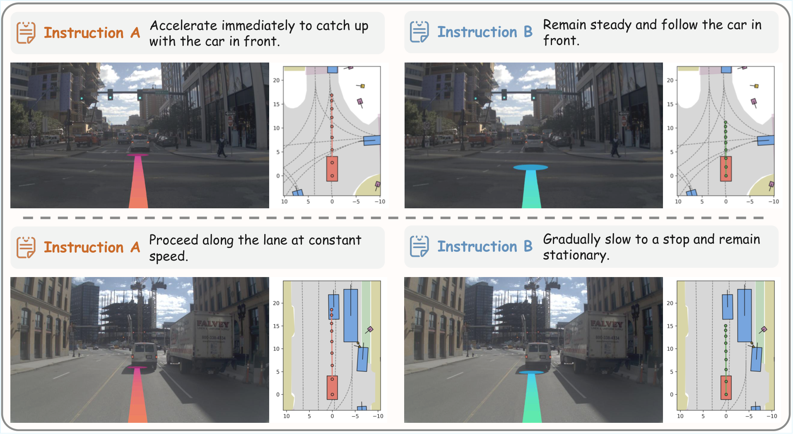
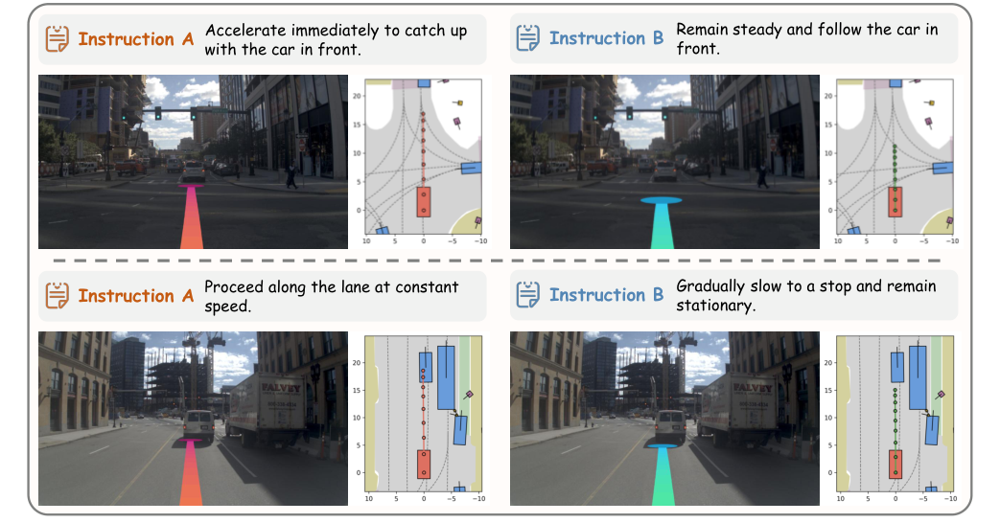

Vega
简单摘要
视觉-语言-动作模型通过将自然语言纳入决策过程来重塑自动驾驶。作者的总体方法路径是：然而，大多数现有管道仅利用语言模态进行场景描述或推理，缺乏遵循不同用户指令进行个性化驾驶的灵活性。
另外一个关键点是，为了解决这个问题，我们首先构建一个大规模驾驶数据集（InstructScene），其中包含大约 100,000 个场景，并用不同的驾驶指令和相应的轨迹进行注释。从结果来看，然后，我们提出了一个统一的视觉-语言-世界-动作模型，用于基于指令的生成和规划。


以视觉为中心的自动驾驶因其经济优势和可扩展性而成为一个有前途的方向。作者的总体方法路径是：传统方法通常遵循感知、预测和规划的模块化流程，严重依赖昂贵的 3D 注释，因此在实际应用中面临限制。
另外一个关键点是，相比之下，通用驾驶代理不仅应该自主导航，还应该理解和执行各种用户指定的自然语言指令。从结果来看，为了解决这个问题，我们提出了一个统一的视觉-语言-世界-行动模型，用于基于联合指令的生成和规划。
核心创新
这篇工作的创新不是简单堆模块，而是把问题重新定义为：为了解决这个问题，我们首先构建一个大规模驾驶数据集（InstructScene），其中包含大约 100,000 个场景，并用不同的驾驶指令和相应的轨迹进行注释。
另一项关键新意在于：然后，我们提出了一个统一的视觉-语言-世界-动作模型，用于基于指令的生成和规划。这使方法不只是能生成结果，更能解释为什么会有效。
进一步看，为了解决这个问题，我们引入了一种基于指令的驾驶模型，该模型根据观察、历史行为和当前用户指令来预测当前的自我行为。这也是它和纯工程拼装方案拉开差距的地方。
技术细节
方法主干可以概括为：感知模块从观察中提取场景表示。
其中最关键的环节是：然后预测模块根据 预测智能体的未来运动。这种设计直接带来的效果是：最后，规划模块使用、、和历史自我行为来规划当前的自我行为。
从训练与推理角度看，作者还专门处理了：为了解决这个问题，我们引入了一种基于指令的驾驶模型，该模型根据观察、历史行为和当前用户指令来预测当前的自我行为。
$$ A_t = \mathcal{M}([I_{t-T}, \dots, I_{t}], [A_{t-T}, \dots, A_{t-1}]). $$
这组公式用于定义模型中的变量关系和训练目标。建议先看左侧要预测的对象，再看右侧每一项如何约束优化方向。
$$ A_t, D_t = \mathcal{W}([I_{t-T}, \dots, I_{t}], [A_{t-T}, \dots, A_{t-1}]). $$
该公式用于定义核心计算关系。阅读时先看左侧目标量，再看右侧由 A_t、D_t、W、t 等变量构成的约束和聚合方式。
$$ A_t = \mathcal{V}([I_{t-T}, \dots, I_{t}], [A_{t-T}, \dots, A_{t-1}], L_t). $$
该公式用于定义核心计算关系。阅读时先看左侧目标量，再看右侧由 A_t、V、t、T 等变量构成的约束和聚合方式。
$$ \mathcal{L}_A = \mathbb{E}_{A_t^{(N)}, \epsilon, m}[ || \epsilon - \hat\epsilon(A_t^{(N)}, \epsilon, m, I_t^{(-T)}, L_t) ||^2 ], $$
该公式用于定义核心计算关系。阅读时先看左侧目标量，再看右侧由 L、E、A_t、N 等变量构成的约束和聚合方式。
$$ \mathcal{L}_V = \mathbb{E}_{F_{t+N}^V, \epsilon, n}[ || \epsilon - \hat\epsilon(F_{t+N}^V, \epsilon, n, I_t^{(-T)}, L_t, A_t^{(N)}) ||^2 ], $$
这组公式用于定义模型中的变量关系和训练目标。建议先看左侧要预测的对象，再看右侧每一项如何约束优化方向。
$$ \mathbf{z} &= \mathcal{P}_{er}(I_{t-T}, \dots, I_{t}]), \\ \mathbf{v} &= \mathcal{P}_{re}(\mathbf{z}), \\ A_t &= \mathcal{P}_{lan}(\mathbf{z}, \mathbf{v}, [A_{t-T}, \dots, A_{t-1}]). $$
该公式用于定义核心计算关系。阅读时先看左侧目标量，再看右侧由 z、P、t、T 等变量构成的约束和聚合方式。

实验结论
实验主要围绕一个核心问题展开验证：数据集和基准逐项列出 NAVSIM v1 过滤器 OpenScene，以删除近乎琐碎和错误的场景，将列车分割大小减少到 85k。
从主要对比结果来看，在评估过程中，NAVSIM v1 以 10Hz 运行非反应式模拟 4 秒，然后使用包括无故障碰撞 (NC)、可驾驶区域合规性 (DAC)、碰撞时间 (TTC)、舒适度 (Comf.) 和自我进步 (EP) 在内的指标对驾驶代理进行评分。定性结果与消融实验进一步表明：我们使用训练分割进行训练，使用测试分割进行评估。
理解评价
从整篇论文看，它的真正贡献是：然后预测模块根据 预测智能体的未来运动，而不是单纯把扩散模型继续微调。作者把问题落在“分布外驾驶场景如何稳定生成”这个更关键的缺口上。
它最有说服力的地方在于：为了解决这些问题，我们采用集成变压器架构，它将自回归 VLM 和扩散变压器融合到单个模型中，使生成模块能够与理解模块交互，而不会丢失信息并产生结果。这说明论文的方法链路——3D 点云编辑、车辆补全、再到 RL 后训练——是前后闭合的，而不是各模块各自堆叠。
主要局限在于：当前方案仍受算力和时长限制，更适合离线生成而非实时闭环模拟。如果继续往前推进，一个自然方向是把更长时序、更低成本训练和更广泛的 OOD 场景覆盖一起纳入统一评估。
以下相关论文可作为延伸阅读：